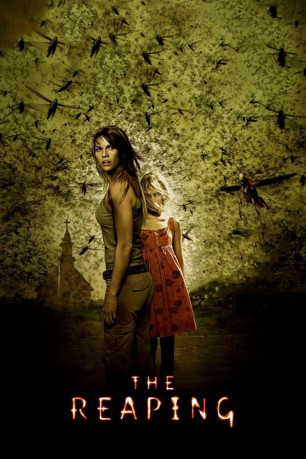

#4683 The Reaping - Die Boten der Apokalypse
Alternativ: The Reaping
 
 IMDB-Wertung: 5.7 / 10
IMDB-Wertung: 5.7 / 10  Metascore: 0
Metascore: 0 
Erst durch einen tragischen Vorfall in ihrem Leben vor einigen Jahren wurde Katherine Winter, die an einer Universität unterrichtet, zur Atheistin. Desweiteren gab er ihr den Anstoß, sogenannte "Wunder" in der Welt zu untersuchen und sie wissenschaftlich zu erklären - ihrer Meinung nach gibt es diese Wunder nicht. Doch schon bald soll ihre Überzeugung erschüttert werden, als Doug Blackwell sie und ihren Freund Ben anheuert, um ein unerklärliches Ereignis in seinem kleinen Kaff Haven, Louisiana, zu untersuchen. Der nahegelegene Fluss färbte sich vor kurzem blutrot, nachdem ein kleiner Junge am Ufer tot aufgefunden wurde. Die Bewohner schieben die Schuld auf seine Schwester Loren. Katherine stellt mit Ben Nachforschungen an, während sich weitere mysteriöse Vorkommnisse häufen - im Stile der zehn biblischen Plagen.
Jahr: 2007
Dauer: 99 Minuten
FSK: 16
Land: USA Studio: Warner Bros.Tonspuren: DD5.1 - ,
Untertitel: Deutsch,
Auflösung: 1080p (1920x800) Größe: 5529 MB
Genre: Thriller, Horror
Regisseur:  Stephen Hopkins
Stephen Hopkins
Drehbuch: Paul Viragh
Soundtrack:
Darsteller:
 Hilary Swank als Katherine
Hilary Swank als Katherine David Morrissey als Doug
David Morrissey als Doug Idris Elba als Ben
Idris Elba als Ben AnnaSophia Robb als Loren McConnell
AnnaSophia Robb als Loren McConnell Stephen Rea als Father Costigan
Stephen Rea als Father Costigan William Ragsdale als Sheriff Cade
William Ragsdale als Sheriff Cade John McConnell als Mayor Brooks
John McConnell als Mayor Brooks David Jensen als Jim Wakeman
David Jensen als Jim Wakeman Yvonne Landry als Brynn Wakeman
Yvonne Landry als Brynn Wakeman- Samuel Garland als William Wakeman
 Andrea Frankle als Maddie McConnell
Andrea Frankle als Maddie McConnell Stuart Greer als Gordon
Stuart Greer als Gordon Lara Grice als Isabelle
Lara Grice als Isabelle- Burgess Jenkins als David Winter
 Jillian Batherson als Janet
Jillian Batherson als Janet Afemo Omilami als Haman
Afemo Omilami als Haman Eddie J. Fernandez als Hazmat Worker
Eddie J. Fernandez als Hazmat Worker- Sierra Lyn Duncil als Town Girl , uncredited
 Louis Dupuy als Townsperson , uncredited
Louis Dupuy als Townsperson , uncredited Stephanie Honoré als Secretary , uncredited
Stephanie Honoré als Secretary , uncredited Ross Rouillier als College Student , uncredited
Ross Rouillier als College Student , uncredited Brian Tester als Tourist in Chile , uncredited
Brian Tester als Tourist in Chile , uncredited- Myles Cleveland als Kyle Wakeman
- Mark Lynch als Brody McConnell
- Cody Sanders als Hank
- Sabrina A. Junius als Sarah Winter
- Karen Yum als Nun
- Axel C. Cartagena als Chilean Boy
- Javier Ortiz Cortés als Monastery Cop
- Iris Martinez als Old Chilean Woman
- Axel Anderson als Blind Man
- Robert Alonzo als Hazmat Worker
- Abraham Henderson als Man Speaking in Tongues
- Felipe Febres Rivera als Man Speaking in Tongues
- Gregorio Allende als Man Speaking in Tongues
- Sixta Rivera Romero als Woman Speaking in Tongues
- Rafael Fuentes Negrón als Padre Bonilla
- Lisa Marie Dupree als Teacher , uncredited
- Carol Dupuy als Townsperson , uncredited
- Cody Juneau als College Student, Prof. Katherine's Class , uncredited
- Kevin Lorio als LSU Lecture Student , uncredited
- Kimberly Whitfield als LSU Lecture Student , uncredited
Datei: X:\2007(N-Z)\Reaping - Die Boten der Apokalypse, The (2007, FSK16, 1920x800).mkv seit 03.11.2016
Festplatte: HD 2007(A-Z)-2008(A-F)
 Es gibt insgesamt 56 Filme in der Gruppe '2007(N-Z)'
Es gibt insgesamt 56 Filme in der Gruppe '2007(N-Z)'